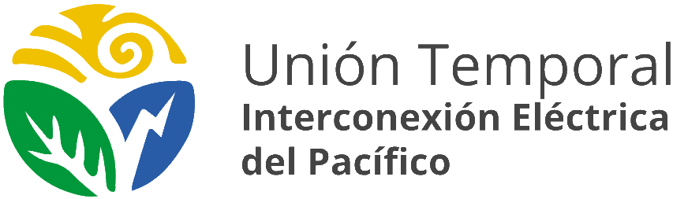

Plan de gestión social para la interconexión eléctrica en comunidades rurales del Pacífico
Proyecto en cifras
Territorios del proyecto
Nariño y Cauca
- Guapi
- Tumaco
- La Tola
- Timbiquí
- Mosquera
- El Charco
- Santa Bárbara
- Olaya Herrera
- Francisco Pizarro
- Municipios priorizados del Cauca
El proyecto se desarrolla en territorios rurales costeros del Pacífico colombiano donde el acceso a energía eléctrica ha sido históricamente limitado.
Infraestructura energética para el Pacífico
Laboratorio de Innovación Social
Trabaja con nosotros
Únete a nuestro equipo y participa en este proyecto de transformación territorial.